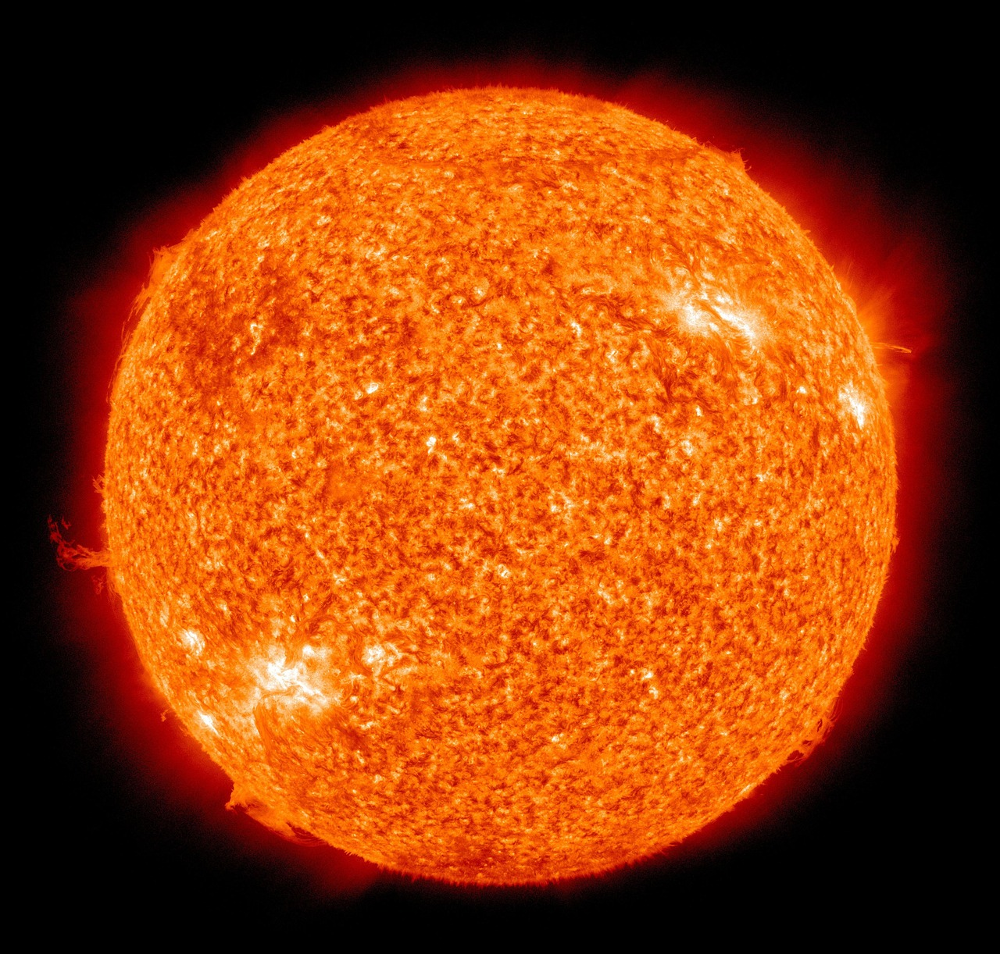
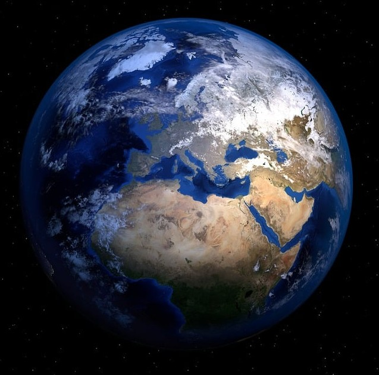

宇宙
果てしない可能性と未知の世界
宇宙の不思議
宇宙は無限の広がりと未知の世界で満ちています。
銀河、惑星、星雲、ブラックホールなど、私たちの想像を超えた存在がたくさんあります。
各用語の説明
恒星
自ら光を発している星のこと。
例:太陽,星座の星
惑星

恒星の周りを回っている自ら光ることのない星のこと。
例:地球などの太陽系の星
衛星
惑星の周りを回っている比較的小さい星のこと。
例:月
彗星
太陽系小天体のうち,ガスやイオンによる尾をもった星のこと。
例:ハレー彗星
小惑星
太陽系小天体のうち,彗星のような拡散成分をもたない星のこと。
例:イトカワ
銀河
恒星やガス状の星間物質や宇宙塵,正体が詳しく分かっていない暗黒物質などが重力によって拘束された巨大な天体のこと。
例:天の川銀河
星雲
重力的にまとまりをもった宇宙塵や星間ガスなどから成る天体のこと。
例:オリオン座の大星雲(M42)
ブラックホール
宇宙空間に存在する天体のうち,極めて高密度で,極端に重力が強いために物質だけでなく光さえ脱出することができない天体のこと。
例:いて座A*